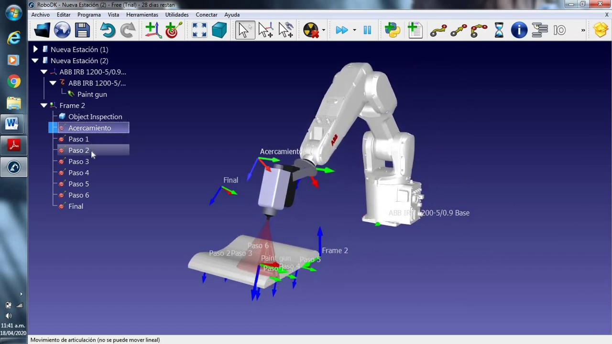
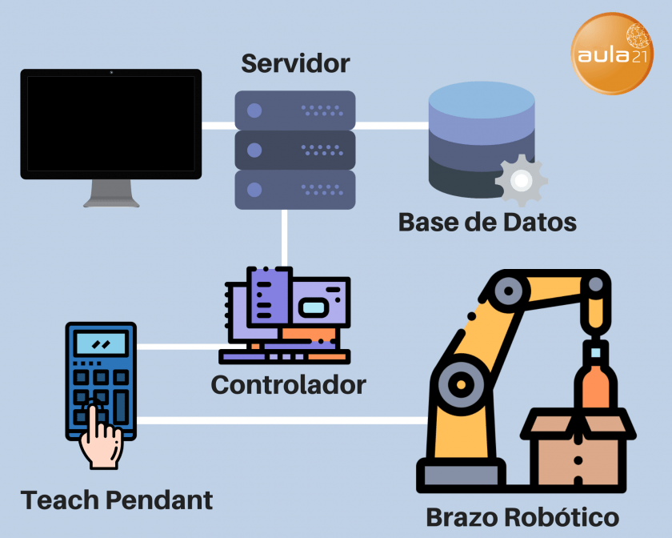
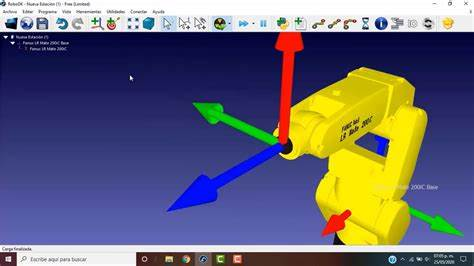
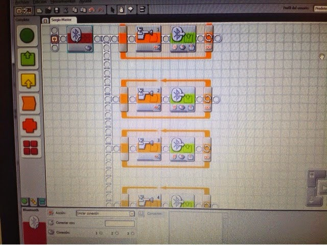

Introducción a la programación de robots
La programación de robots es una disciplina que se encarga de crear algoritmos y programas para que los robots realicen tareas específicas. La programación de robots puede ser muy compleja, dependiendo del tipo de robot y de las tareas que se quieran realizar La programación de robots es una rama de la informática que se encarga de desarrollar software para controlar el comportamiento y la funcionalidad de los robots. La programación de robots implica diseñar y escribir código para que los robots realicen tareas específicas de forma autónoma. Para ello, es necesario conocer el lenguaje de programación adecuado y las herramientas de software para programar el robot. La programación de robots puede ser muy compleja, especialmente cuando se trata de robots con características avanzadas como la inteligencia artificial y la visión por computadora. La programación de estos robots requiere habilidades y conocimientos especializados en áreas como la robótica, la inteligencia artificial, la visión por computadora y la mecánica. En la actualidad, la programación de robots se utiliza en diversas aplicaciones, como la manufactura, la logística, la medicina, la exploración espacial y la agricultura, entre otras. A medida que la tecnología de los robots continúa evolucionando, la programación de robots se vuelve cada vez más importante para el desarrollo y la implementación de robots en diversos campos y aplicaciones.
Lenguajes de programación para robots
Existen muchos lenguajes de programación que se utilizan en la programación de robots. Algunos de los lenguajes más comunes incluyen C++, Python y Java. Cada lenguaje tiene sus propias ventajas y desventajas, y la elección del lenguaje dependerá del tipo de robot y de las tareas que se quieran realizar Además de los lenguajes de programación mencionados anteriormente, también existen otros lenguajes específicos para la programación de robots, como Robot Operating System (ROS) y Blockly. ROS es un framework de código abierto diseñado para simplificar el desarrollo de software para robots, mientras que Blockly es un lenguaje visual de programación que permite crear programas de forma visual mediante bloques de código. La elección del lenguaje de programación dependerá de factores como la experiencia del programador, la complejidad de la tarea a realizar y las capacidades del robot. Es importante considerar que, aunque algunos lenguajes pueden ser más fáciles de aprender, también pueden limitar las capacidades del robot. Por lo tanto, es importante evaluar cuidadosamente las opciones disponibles antes de elegir un lenguaje de programación para robots Además de los lenguajes de programación mencionados, también existen lenguajes específicos para la programación de robots, como RoboMind, RoboBlockly y RoboCode. Estos lenguajes se enfocan en simplificar la programación de robots y facilitar el aprendizaje para principiantes. La elección del lenguaje de programación también puede depender del sistema operativo que el robot utiliza. Algunos robots utilizan sistemas operativos especializados, como ROS (Robot Operating System), que tienen su propio conjunto de herramientas y lenguajes de programación. Es importante seleccionar el lenguaje de programación adecuado para el robot y las tareas que se quieren realizar, ya que esto puede afectar la eficiencia y la facilidad de programación.
Programación de movimientos
La programación de movimientos es una parte esencial de la programación de robots. En esta etapa se definen los movimientos que el robot realizará para llevar a cabo una tarea específica. Esto puede incluir movimientos simples, como girar y avanzar, o movimientos más complejos, como caminar o levantar objetos La programación de movimientos es un proceso clave en el desarrollo de un robot, ya que permite definir la secuencia de acciones que éste deberá ejecutar para cumplir con una tarea específica. Esta etapa de la programación implica la definición de diferentes tipos de movimientos, como por ejemplo movimientos básicos (avanzar, girar, detenerse, etc.) o movimientos más complejos (levantar objetos, desplazarse por superficies irregulares, saltar obstáculos, etc.). Para programar los movimientos de un robot, es importante tener en cuenta factores como la cinemática, la dinámica y la mecánica del robot. La cinemática se refiere al estudio del movimiento y la posición de los objetos en el espacio, mientras que la dinámica se enfoca en el estudio de las fuerzas que influyen en el movimiento de los objetos. La mecánica, por su parte, se centra en el estudio de la estructura y los componentes del robot que influyen en sus movimientos. Además, la programación de movimientos también puede incluir la utilización de sensores para detectar obstáculos, evitar colisiones y ajustar el movimiento del robot en tiempo real. En este sentido, los algoritmos de planificación de trayectorias y los sistemas de navegación autónomos son herramientas fundamentales para garantizar el correcto desplazamiento del robot en su entorno La programación de movimientos también puede incluir la coordinación de múltiples movimientos, por ejemplo, la sincronización de brazos y piernas en un robot humanoide. Además, se pueden utilizar algoritmos de planificación de movimientos para optimizar los movimientos del robot y garantizar que se cumplan los objetivos de manera eficiente. La programación de movimientos puede ser una tarea desafiante, ya que se deben tener en cuenta muchos factores, como la cinemática del robot, la dinámica del movimiento, la eficiencia energética y la seguridad. Es importante que los programadores tengan una comprensión sólida de la física y la mecánica del robot para poder diseñar movimientos precisos y efectivos. En la programación de movimientos también se utilizan herramientas de simulación para probar y verificar los movimientos del robot antes de que se implementen en el mundo real. Las simulaciones permiten a los programadores ajustar los parámetros y mejorar los movimientos del robot sin poner en peligro al robot ni a las personas a su alrededor. En resumen, la programación de movimientos es una parte fundamental de la programación de robots y es crucial para lograr que el robot realice tareas específicas de manera efectiva y segura.
Programación de tareas y secuencias
La programación de tareas y secuencias es otra parte importante de la programación de robots. En esta etapa se define la secuencia de tareas que el robot debe realizar para completar una tarea específica. Esto puede incluir la recopilación de datos, la toma de decisiones y la ejecución de tareas La programación de tareas y secuencias es una de las partes más importantes de la programación de robots ya que permite definir de manera clara y detallada las acciones que el robot debe realizar para completar una tarea específica. En esta etapa, se pueden definir tanto tareas simples como complejas, dependiendo de la tarea que el robot deba realizar. Para programar tareas y secuencias, se utilizan diversos métodos y herramientas de programación. Estos pueden incluir lenguajes de programación específicos para robótica, como ROS (Robot Operating System), así como herramientas de programación visual que permiten diseñar y programar tareas y secuencias mediante diagramas de flujo o bloques. La programación de tareas y secuencias también implica la definición de una secuencia lógica de tareas para que el robot pueda completar la tarea de manera eficiente. Esto puede incluir la definición de decisiones y la implementación de algoritmos para la toma de decisiones en función de los datos recopilados por los sensores del robot.
